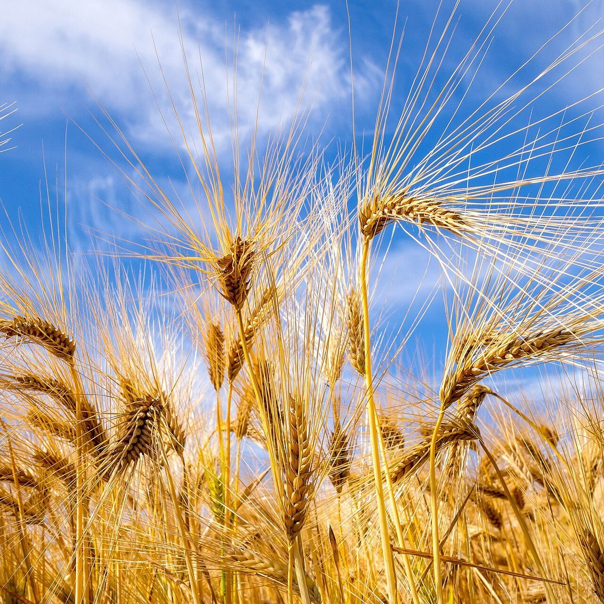

口コミ
イメージ例このページの内容は、サイトの見え方をご確認いただくための創作サンプルです。実際のお客様の声ではありません。
一度、ゆっくり立ち寄ってみたいなと思います。
イメージ例どんなお店なのか、ページで分かったらうれしいな。
イメージ例営業時間や場所がすぐ分かるページだったら、友人にも教えたいと思います。
イメージ例イメージ

このページの内容は、サイトの見え方をご確認いただくための創作サンプルです。実際のお客様の声ではありません。
一度、ゆっくり立ち寄ってみたいなと思います。
イメージ例どんなお店なのか、ページで分かったらうれしいな。
イメージ例営業時間や場所がすぐ分かるページだったら、友人にも教えたいと思います。
イメージ例
掲載写真はフリー素材のイメージ写真です。実際の店舗・商品の写真ではありません。日本国内の他地域・海外・撮影地不明のものを含みます。